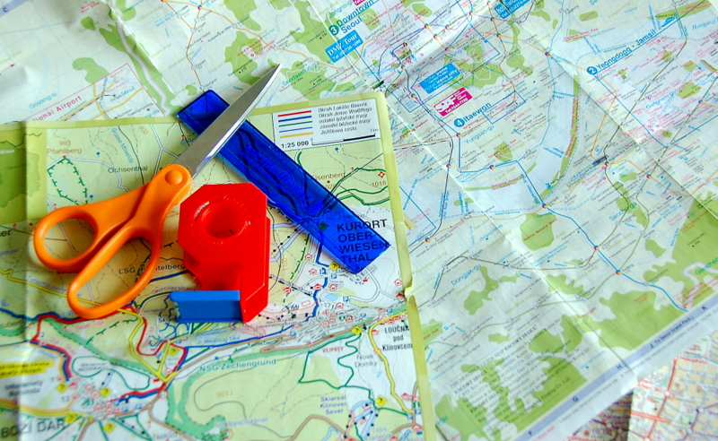
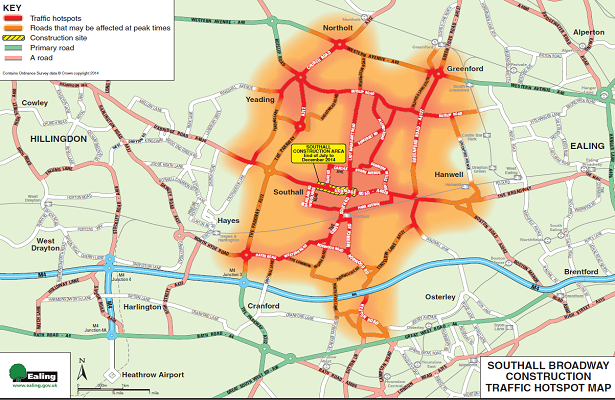

A tool used for Segmenting multiple trails of a route at a time.
Transit Guidance system for Durgapur city.
Tool to find landmarks of a specific region.
Finding chaotic and non-chaotic region of a trail